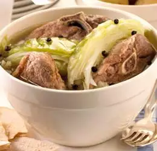

Recipe for Fårikål

Description
Fårikål is a traditional lamb or mutton recipe from Southern Norway.
Lamb and cabbage are layered and stewed with peppercorns.
Ingredients
- 8 ounces sliced lamb meat
- 1 head cabbage, cored and sliced
- 2 cups of water
- 1 1/2 tablespoons whole black pepper
- salt to taste
Steps
- Arrange a layer of sliced lamb in the bottom of a Dutch oven or soup pot.
- Top with a layer of cabbage. Repeat layering as many times as you can.
- Season with salt to taste.
- Tie peppercorns into a small piece of cheesecloth; place in center.
- Pour water in and cover with a lid.
- Bring to a boil; simmer over low heat for 2 hours. Remove peppercorns before serving.